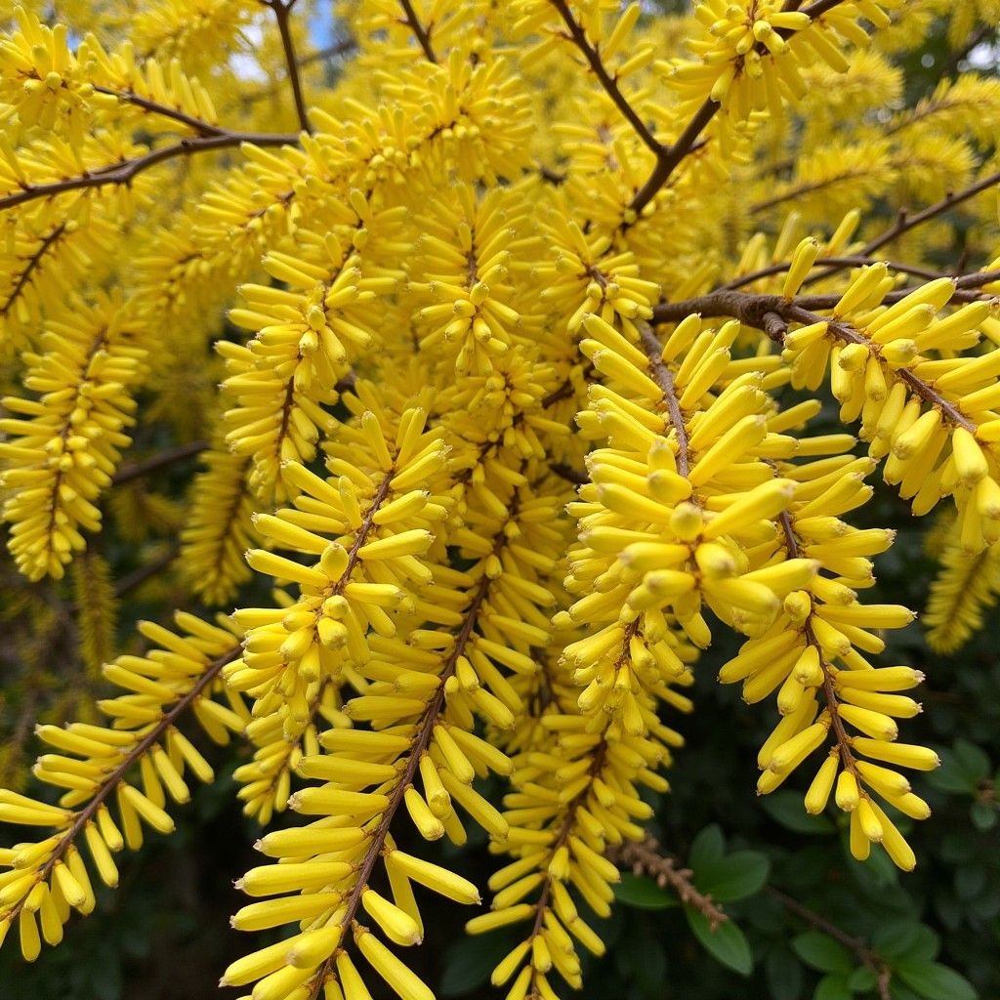

Forsythia
Symbolizes friendship, hope, and the arrival of spring. In love, it represents a lasting and hopeful love.
Forsythia, you are the hope that renews my heart. Your radiant beauty fills me with love and joy.
Symbolizes friendship, hope, and the arrival of spring. In love, it represents a lasting and hopeful love.
Forsythia, you are the hope that renews my heart. Your radiant beauty fills me with love and joy.